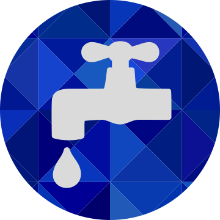
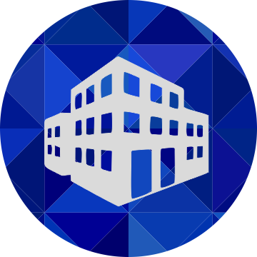
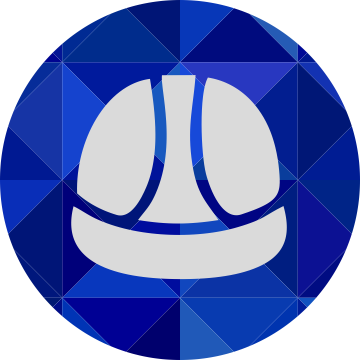

O que fazemos
Preparar o aluno para que, com valores éticos e sociais, atinja a sociedade e entre no mercado de trabalho. Difundir uma visão empresarial.

Projetos Arquitetônicos

Projetos Elétricos

Projetos Hidrossanitários

Humanização de Plantas e Renderização
